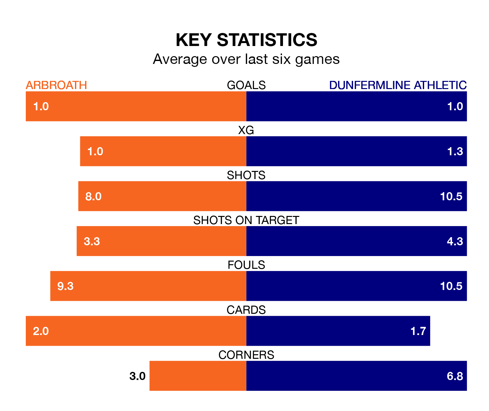

Dunfermline Athletic are strong favourites to take all three points despite Arbroath's home advantage in Saturday's match at Gayfield Park.
*Betting Company* are offering odds of 1.99 on Dunfermline sealing the win, with the visitors sitting fifth in the Championship table.
Arbroath, who are 10th in the league and 15 points behind Dunfermline, are priced at 3.53 to win. A draw is set at 3.42.
In the last 10 years, Arbroath and Dunfermline have played each other on 19 occasions. Arbroath won six of them, Dunfermline 10, and they drew three times.
On average, Arbroath scored 1.2 goals and Dunfermline 1.7 in those matches.
Their last meeting was on February 17, when they played out a 1-1 draw.
Arbroath are in bad form in the Championship, with one win and a draw from their last six games.
With three wins and a draw over that period, Dunfermline's form is much better – they have taken 10 points from 18, compared to the hosts' four.
With 30 goals in 29 games so far this season, Arbroath are the league's lowest scorers with 1.0 goals per game. And they are conceding more than average, letting in 65 goals at a rate of 2.2 per game.
Athletic are also below average scorers, with 1.1 goals per game, compared to a league average of 1.4. They have conceded 1.3 goals per game.
Arbroath's last match was on March 23, a 1-0 loss against Partick Thistle.
Dunfermline beat Greenock Morton 1-0 last time out, also on March 23, with Miles Welch-Hayes on the scoresheet.
Updated: 12:16 (UTC), 25/03/24